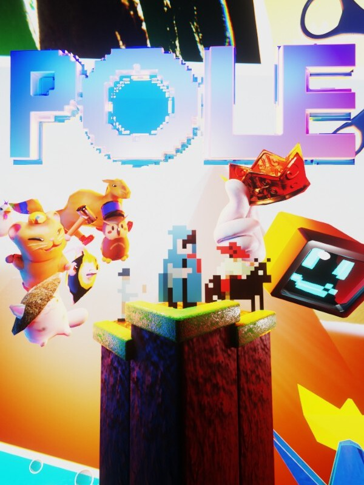

POLE
POLE
Detalhes
 |
|
| Tempo de jogo | Não Jogado |
| Última Atividade | Nunca |
| Adicionado | 07/06/2026 0:35:52 |
| Modificado | 07/06/2026 2:34:26 |
| Status de Conclusão | Not Played |
| Biblioteca | Steam |
| Fonte | Steam |
| Plataforma | PC (Windows) |
| Data de Lançamento | 02/05/2022 |
| Pontuação da Comunidade | |
| Avaliação da crítica | |
| Pontuação do Usuário | |
| Gênero | Adventure Indie Platform Strategy |
| Desenvolvedor | Iuvenis Studios |
| Editor | |
| Funções | Single Player |
| Links | Steam Official Website Twitch YouTube Subreddit |
| Tag | |
Descrição
WARNING: System anomaly detected; System health at 20%; Transmission has been logged.
THE GAME:
- POLE is a fun and challenging 2D platformer.
- You explore a unique world that has been transformed from 2D into 3D.
- POLE's gameplay is simple, you have a POLE (like a stick), and you use the arrow keys to jump off surfaces, be it walls, ceiling or floor.
GAMEPLAY:
- 22 Levels.
- 2-12 Hours, depending on skill.
- Collectables.
- Food! (The Restaurant.)
- Hilarious Characters.
- Vent your frustration by raging with a rage button.
- AND MORE...!
FAQ:
Q: HOW DO I PLAY THIS GAAAAAAME!!!!
A: You use the POLE to pole jump off walls, floors, and ceilings.
For example:
Use the POLE Downwards to jump up from a floor
Use the POLE Upwards to launch down from a ceiling
Use the POLE Leftwards to jump right from a wall
Use the POLE Rightwards to jump left from a wall
Keep practicing, try new things, and you will succeed.
Q: What is the point of POLE?
A: It's... complicated...
Just kidding :P.
The point of the game is to collect all the Sprites and beat the levels.
But that's not the only thing, play the game, explore every part of the levels, and see...
Q: How difficult is POLE?
A: Play it and see ;).
YOU CAN TRY!
NEVER GIVE UP!
----------
- Transmission Start - Date 2021/05/28 11:59 -
*A small office*
Man: "WOOHOO! It's finally time to release this!"
?: "Yeah!"
Man: "Alright, let me make sure it works...... done!"
*Cheering*
- Transmission End -
- Transmission Start - Date 2021/05/28 12:00 -
*Loud running followed by a door being slammed*
??: "WE FORGOT TO ADD [Redacted]!!!"
?: "..."
Man: "I can fix it..."
?: "How?"
*A desk is slammed*
Man: "With an UPDATE!"
?: "..."
*Frantic typing.*
Man: "There, I updated the game with [Redacted]"
?: "..."
- Transmission End -
- Transmission Start - Date 2021/05/28 12:01 -
*Server room*
*A series of cracks and pops, punctuated with the smell of burned wire*
00111111 00111111 00111111: "01001000 01000101 01001100 01001100 01001111"
- Transmission End -